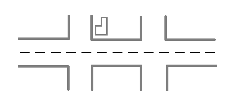

番組視聴メモ（生活における地理空間情報の活用（'16）第2回）
生活における地理空間情報の活用（'16）第3回「地理空間情報のさまざまな表現と処理技術」（2016/4/15放送）http://www.ouj.ac.jp/hp/kamoku/H28/kyouyou/C/seikatu/1710087.html
--------------------------------------------------------------------------------------------------
本章ではさまざまな地理空間情報の基本的な表現と処理のタイプについて学ぶとともに、近年のニーズにより、静的なデータだけではなく、時間情報を含む動的なデータを扱うことが増え、より処理が高度化していく様子を学ぶ。
【キーワード】
図形、属性、重ね合わせ、ジオコーディング、検索、メタデータ、時空間情報、標準化執筆担当講師名川原 靖弘（放送大学准教授）
--------------------------------------------------------------------------------------------------
＜番組視聴メモ＞
「地理空間情報のさまざまな表現と処理技術」
地物は、点、線、面で表現される。

「細胞」のようなもの
実世界は地理空間情報の集まり
e.g., 災害時の情報を重ね合わせる
校区
土砂災害危険箇所
地理空間情報を扱えるソフトウェアの開発は、1980年代前半から始まっていた。主な出来事は以下の通り。
1967年 ESRI社
1982年 ArchInfo
1996年 ArcView2.0では、Shapefile形式を採用
2005年 Google Earth （ファイル形式はKML）
2009年 OSS（オープンソースソフトウェア）のQGIS ver1.0がリリース
■QGISについて
QGISのプロジェクトそのものは、2002年にGary Sherman氏によって立ち上げられた。
QGISの作り手は、世界中のプログラマーなど。
日本語化も進む。その担い手は日本のボランティア（コミュニティ）で、その代表が「FOSS4G」。番組では関本氏が、同コミュニティのキーパーソンである嘉山氏にインタビューした。
QGISは、途上国での利用も進む。また、学術、企業、官公庁関連にも普及している。
■地図上で何かのデータを表示するための事前処理 ージオコーディング
例：OpenData
ふじのくにオープンデータカタログ
静岡「安政時代浸水地図」津波浸水域を表示する
「津波が来た時に何人くらいに影響があるか」を分析する情報源にもなる
・背景地図
「国土地理院地図」無償でダウンロードできる
・国勢調査の人口分布データ
・2Dから3Dデータもできる
ただし、データは（料理で言えば）食材を揃えて切ったり、など前処理が必要。
・緯度、経度
・住所
・地名
＊住所を、緯度経度に変換することを、Geo Coding（ジオコーディング）という。ジオコーディングを行うには、（両者を紐付けるための）辞典を用意しないといけない。
OSGIO財団の支部として、
東京大学空間情報科学センター（以下、CSIS）がが様々な活動を展開している。
1998年の設立。春川氏
欧米は、道路（ストリート）で表記する。それに対して、日本は、住所や地名などで表記。複雑である。国内には、5,000万件以上の家屋が存在する。
これを処理するには処理能力の高いサーバーが必要になる。これが、CSISの提供するサービスを支えている。
CSISでは日々、200万件ほどのデータを緯度経度情報に変更している。CSISは、研究者が共同利用しているセンターである。また、ビジネス用途でもサービスが利用されている。
例：公立大学の住所一覧を表示（html）
→CSVで保存
→CSISのサーバーに投入し、緯度経度に変換
番組では、非常に高速に処理できることを示す。これがジオコーディングサービスとして提供されている。
→得られた緯度経度情報を、QGISに読み込ませ、地図データ上にプロットすることができる。
こうした仕組みがあると、知りたいものを探すアプリケーションも開発できる。
ラーメン屋さんが日本国内に、10万件あると仮定する。その中で、最寄りのラーメン屋を知りたいとする。（放送大学がある）千葉市および離接自治体のラーメン屋さんの情報（インデックス）を表示する。
■計算幾何学
・重ね合わせ問題
・探索問題
いずれもアルゴリズムは1920年代に考案
例1：地図上での交差判定
例2：国道1号が通るすべての市町村をピックアップして表示する
線と面の交差判定を行う
カーナビはさらに高度な処理をしている。
図形同士の関係性（つながり）を位相（トポロジー）という。
最短経路探索は、位相構造をもとに計算する。アルゴリズムは、1950年代に考案されている。
格子状の図を作る。
格子の交差点に対して、始点からどれくらいの時間を要するかを記入。その時間をインデックスとして持たせる。インデックスは「図書館の本のラベル」のようなものである。
地物：
コンピューターがインデックスを更新する
・自治体コード
・道路ネットワークのつながり
ラーメン屋さんの広さ、営業時間帯、メニューおよび値段、などを属性情報という。
「検索サービス」
Robot型検索エンジンがインデックスを作っている。その結果、瞬時に結果を返すことができる仕組み。単にリンクを辿る、かつてのネットサーフィンとは仕組みが異なる。
平成26年2月
山梨県
「Smart Loop」（パイオニア）
移動体である自動車の走行状況を可視化する（個人情報に配慮した上で）。自動車は移動するため、時間に関する情報が必要である。
毎秒データが集まり、さらに、100人、1,000人、10,000人分のデータとなれば、膨大なデータ（ビッグデータ）になる。
GPSデータも然り。indexing（インデックスの作成）に膨大な処理能力が要求される。並列処理の高速化などと足並みを揃えて進展しつつある。
■地理空間情報の標準化
国際的な取り組みが進められている。
ISO TC2 111
OGC（Open Geospatial Consortium）
日本国内の地図においても、同じ地域において例えば、
国の道路のフォーマットが、FormatA
県の道路のフォーマットが FormatB
市の道路のフォーマットが FormatC
とバラバラならば、これをFormat Dに統一していく、という動き。
＊番組の公式テキストはamazonで販売されています（http://amzn.to/1YaLvrw）
トップページへ